Spatial Modelling of Key Regiona-Level Factors of COVID-19 Mortality in Russia
1 Introduction
Source code of the paper Kotov, E., Goncharov, R., Kulchitsky, Y., Molodtsova, V., Nikitin, B. (2022). Spatial Modelling of Key Regional-Level Factors of COVID-19 Mortality in Russia. GEOGRAPHY, ENVIRONMENT, SUSTAINABILITY, 15(2), 71–83. https://doi.org/10.24057/2071-9388-2021-076
Current data and code: 
All code is visible for reference. Some custom functions are saved in /R/functions.R.
1.1 Abstract
Intensive socio-economic interactions are a prerequisite for the innovative development of the economy, but at the same time, they may lead to increased epidemiological risks. Persistent migration patterns, the socio-demographic composition of the population, income level, and employment structure by type of economic activity determine the intensity of socio-economic interactions and, therefore, the spread of COVID-19.
We used the excess mortality (mortality from April 2020 to February 2021 compared to the five-year mean) as an indicator of deaths caused directly and indirectly by COVID-19. Similar to some other countries, due to irregularities and discrepancies in the reported infection rates, excess mortality is currently the only available and reliable indicator of the impact of the COVID-19 pandemic in Russia.
We used the regional level data and fit regression models to identify the socio-economic factors that determined the impact of the pandemic. We used ordinary least squares as a baseline model and a selection of spatial models to account for spatial autocorrelation of dependent and independent variables as well as the error terms.
Based on the comparison of AICc (corrected Akaike information criterion) and standard error values, it was found that SEM (spatial error model) is the best option with reliably significant coefficients. Our results show that the most critical factors that increase the excess mortality are the share of the elderly population and the employment structure represented by the share of employees in manufacturing (C economic activity according to European Skills, Competences, and Occupations (ESCO) v1 classification). High humidity as a proxy for temperature and a high number of retail locations per capita reduce the excess mortality. Except for the share of the elderly, most identified factors influence the opportunities and necessities of human interaction and the associated excess mortality.
1.2 Key words
COVID-19, spatial models, socio-economic factors, climatic factors, excess mortality, Russian regions
1.3 Funding
The reported study was funded by RFBR according to the research project № 20-04-60490 “Ensuring balanced regional development during a pandemic with spatially differentiated regulation of socio-economic interaction, sectoral composition of the economy and local labour markets”.
2 Loading packages
# preinstall key packages
if( !"renv" %in% installed.packages()[,'Package'] ) { install.packages("renv") }
if( !"here" %in% installed.packages()[,'Package'] ) { install.packages("here") }
# install other pac
source(here::here("R", "functions.R"))
knitr::opts_chunk$set(cache = FALSE)
knitr::opts_chunk$set(echo = TRUE)
knitr::opts_chunk$set(message = FALSE)
knitr::opts_chunk$set(warning = FALSE)
knitr::opts_chunk$set(dpi = 300)
knitr::opts_chunk$set(fig.width = 10)
knitr::opts_chunk$set(fig.height = 8)
# Set so that long lines in R will be wrapped:
knitr::opts_chunk$set(tidy.opts=list(width.cutoff=60), tidy=TRUE)
invisible(lapply(eval(packages_to_load), require, character.only = TRUE))2.1 Loading data
Loading region boundaries with attributes and spatial weights matrix.
The matrix of spatial neighbours for the spatial autocorrelation test and the resulting spatial models were created based on region boundary polygons from OpenStreetMap (OpenStreetMap contributors 2017) with GeoDa software (Anselin et. al 2006) using first-order queen contiguity. Regions without neighbours (such as Kaliningrad Region and Sakhalin Region) were manually connected to 2-3 closest regions .
regions_sf <- here::here("data", "region_borders_with_data.gpkg") %>%
st_read(dsn = ., quiet = TRUE)
# simplify geometry for faster map plotting
regions_sf <- st_simplify(regions_sf, dTolerance = 1000)
# calculate population density
regions_sf <- regions_sf %>%
dplyr::mutate(Population_Density = Population/Region_Area_km2)
OKTMO_NUM <- as.integer(regions_sf$OKTMO_NUM)
nb <- here::here("data", "region_borders_with_data.gal") %>%
read.gal(file = ., region.id = OKTMO_NUM)
W <- nb2listw(nb, style = "W")
codebook <- read_excel(here::here("codebook", "codebook.xlsx")) %>%
setDT()
codebook[, `:=`(variable_name_transformed, variable_name), ]
codebook[log_transform_recommended == "yes", `:=`(variable_name_transformed,
paste0(variable_name, "_log")), ]
all_x_vars <- codebook[var_type == "x", variable_name_transformed,
]Transforming variables that require natural log transformation for better model fit.
Rail Road Density variable is included for reference, but it is not critical for the final model, as it is highly correlated with Road Density. Nonetheless, the transformation of Rail Road Density does require an “increment, then log-transform” approach, as the original data contains 0 values due to missing data in OpenStreetMap.
vars_for_log_transform <- codebook[log_transform_recommended ==
"yes", variable_name, ]
regions_sf_transformed <- regions_sf %>%
mutate_at(vars_for_log_transform, log) %>%
rename_at(vars_for_log_transform, ~paste0(vars_for_log_transform,
"_log")) %>%
mutate(Rail_Road_Density_log = log(regions_sf$Rail_Road_Density +
1))3 Preliminary analysis
3.1 Preliminary Correlation and Linear Regresison analisys
The following plots demonstrate the top variables that could explain
the Excess mortality. This illustrates part of the
preliminary exploratory data analysis.
Correlation of Excess Mortality vs all X variables
All variables are either close to normally distributed or have been ln-transformed, so the correlation is reliable in the following table.
The table below is sorted by descending R2 of one-on-one linear
models of Excess mortality vs corresponding X variable.
cor_table <- correlation_table(regions_sf_transformed)
DT::datatable(cor_table, options = list(scrollX = TRUE, paging = TRUE))3.2 Correlation of top X variables
Correlation of Excess Mortality vs top X variables
The plot below illustrates how some of the top variables from the
table above are related to the Excess mortality as well as
to each other. This illustrates the process of variable selection for
the statistical model.
correlation_pairs_top_x <- yx_vars_correlation_matrix(y_var = "Excess_mortality_apr_feb_per_capita",
x_vars = cor_table[order(-`LM R2`)] %>%
head(7) %>%
.[, `Variable Name`], data_sf = regions_sf_transformed)
correlation_pairs_top_x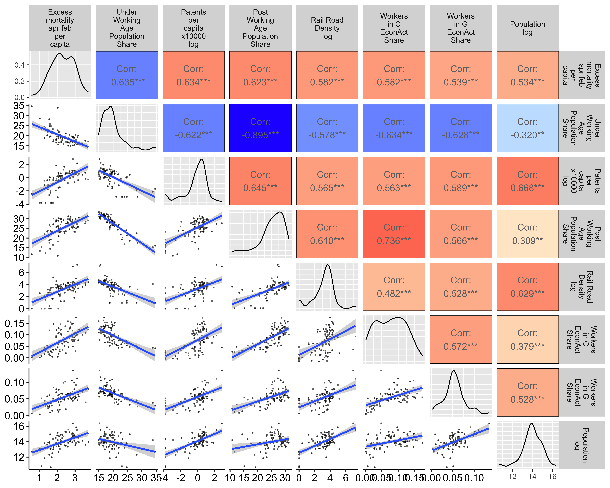
4 Modelling
We use a standard selection of spatial models. Here is a comparison of different spatial econometric model specifications:
 Image source: Vega S.H. and Elhorst J.P. (2015). The Slx Model.
Journal of Regional Science, 55(3), 339–363. DOI: 10.1111/jors.12188
Image source: Vega S.H. and Elhorst J.P. (2015). The Slx Model.
Journal of Regional Science, 55(3), 339–363. DOI: 10.1111/jors.12188
The code below demonstrates building the best model and can be changed by the reader to use different variables and see how the results change.
4.1 Spatial autocorrelation
Most variables suffer from spatial autocorrelation.
y <- var_test_spatial(dataset = regions_sf_transformed, target_var_name = "Excess_mortality_apr_feb_per_capita",
weights = W)
x1 <- var_test_spatial(regions_sf_transformed, target_var_name = "Workers_in_C_EconAct_Share",
weights = W)
x2 <- var_test_spatial(regions_sf_transformed, target_var_name = "Post_Working_Age_Population_Share",
weights = W)
three_maps <- (y/x1/x2)
three_mapsTherefore we may expect the OLS regression to perform poorly. However, we will use it as a baseline model.
4.2 Baseline OLS models
We first build a series of OLS models to check our hypothesis for the key human interaction variables.
4.2.1 M0: Population density and economic activities that require human interaction
We started with the model M0, which takes into account population density (using population density and residential floor per capita variables), employment in economic sectors that require close human interaction (B – mining, C – manufacturing, G – retail and services, P – education, and in small and medium enterprises in general), and local transportation opportunities and constraints (number of buses and cars per capita).
M0 clearly showed that population density and transportation constraints have no effect on mortality. The only two significant variables are the share of employees in manufacturing (C) and retail & services (G), as these are the only variables with confidence intervals that do not cross the zero-line.
The proximity of the confidence interval to zero may be due to the inclusion of insignificant variables in the model, therefore we removed some of these variables starting with the model M4 below.
M0 <- regions_sf_transformed %>%
lm(data = ., formula = Excess_mortality_apr_feb_per_capita ~
Population_Density_log + Floor_Area_per_capita + Workers_in_C_EconAct_Share +
Workers_in_G_EconAct_Share + Workers_in_P_EconAct_Share +
Workers_in_B_EconAct_Share_log + SME_in_GRDP_Share +
Buses_per_capita_log + Cars_per_capita_x1000 + Urban_Population_Share)resid_panel(M0)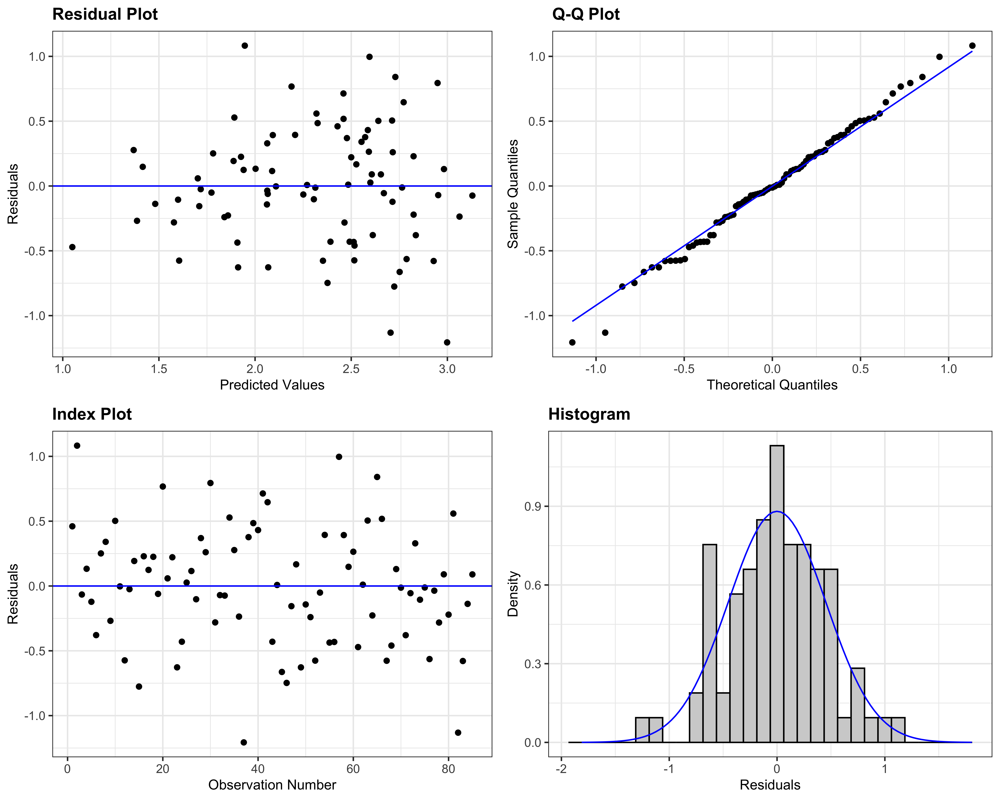
plot_summs(M0, scale = T, inner_ci_level = 0.9, plot.distributions = F)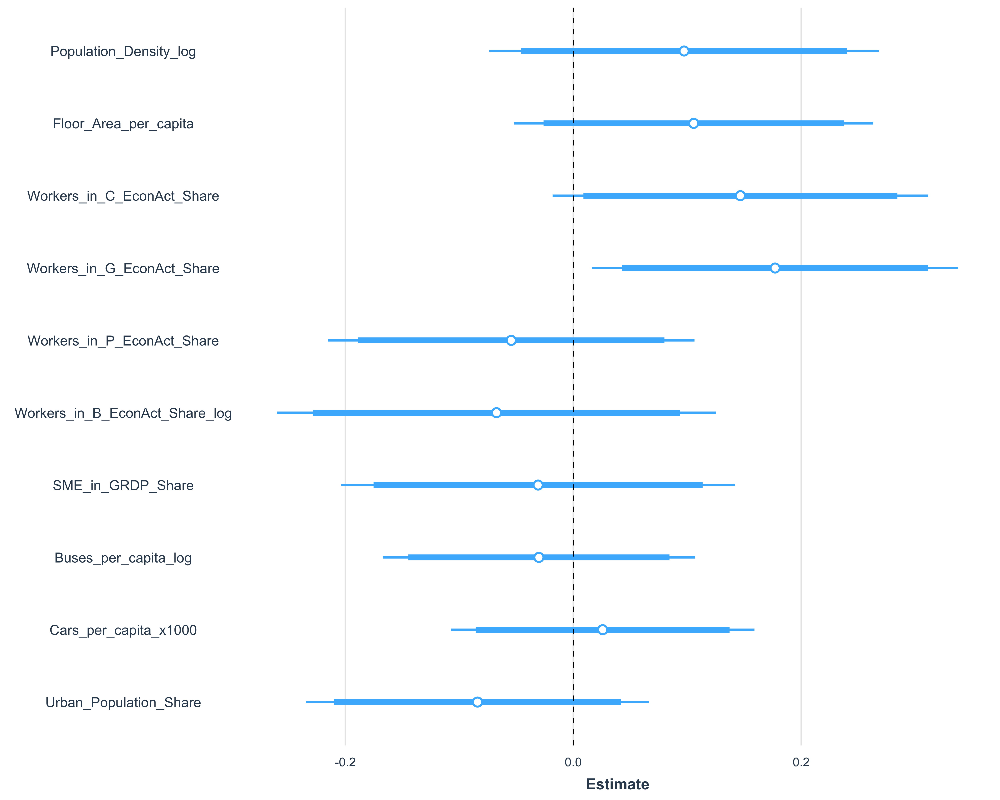
4.2.2 M1: M0 + Climate
M1 is an extension of M0 with climate variables (temperature and humidity). It was found that temperature does not affect mortality, while the effect of humidity is uncertain and should be tried in further models.
M1 <- regions_sf_transformed %>%
lm(data = ., formula = Excess_mortality_apr_feb_per_capita ~
Population_Density_log + Floor_Area_per_capita + Workers_in_C_EconAct_Share +
Workers_in_G_EconAct_Share + Workers_in_P_EconAct_Share +
Workers_in_B_EconAct_Share_log + SME_in_GRDP_Share +
Buses_per_capita_log + Cars_per_capita_x1000 + Jul_Temp_Mean_10yr +
Jul_Humid_Mean_10yr)
resid_panel(M1)plot_summs(M0, M1, scale = T, inner_ci_level = 0.9, plot.distributions = F,
model.names = paste0("M", 0:1))4.2.3 M2: M1 + Healthcare
M2 adds the healthcare component (number of doctors per capita). It was found that, depending on the model, the confidence interval may touch the zero mark, but this factor is still worth considering in further models.
M2 <- regions_sf_transformed %>%
lm(data = ., formula = Excess_mortality_apr_feb_per_capita ~
Population_Density_log + Floor_Area_per_capita + Workers_in_C_EconAct_Share +
Workers_in_G_EconAct_Share + Workers_in_P_EconAct_Share +
Workers_in_B_EconAct_Share_log + SME_in_GRDP_Share +
Jul_Temp_Mean_10yr + Jul_Humid_Mean_10yr + Doctors_per_capita_x1000)
resid_panel(M2)plot_summs(M0, M1, M2, scale = T, inner_ci_level = 0.9, plot.distributions = F,
model.names = paste0("M", 0:2))4.2.4 M3: M2 + Migration and Interregional Transport
M3 adds interregional migration flow and opportunity for the spread of COVID-19 following the Hägerstrand’s (1973) spatial diffusion of innovation (via the airport density). It was found that airports have no detectable effect, which suggests that air travel between regions was likely not a significant factor in the COVID-19 spread across Russia, while inter-regional migration is worth considering.
M3 <- regions_sf_transformed %>%
lm(data = ., formula = Excess_mortality_apr_feb_per_capita ~
Population_Density_log + Floor_Area_per_capita + Workers_in_C_EconAct_Share +
Workers_in_G_EconAct_Share + Workers_in_P_EconAct_Share +
Workers_in_B_EconAct_Share_log + SME_in_GRDP_Share +
Jul_Temp_Mean_10yr + Jul_Humid_Mean_10yr + Doctors_per_capita_x1000 +
Migr_Inflow_InterReg_3Y_mean_per_capita_x10000 +
Airport_Density_log)
resid_panel(M3)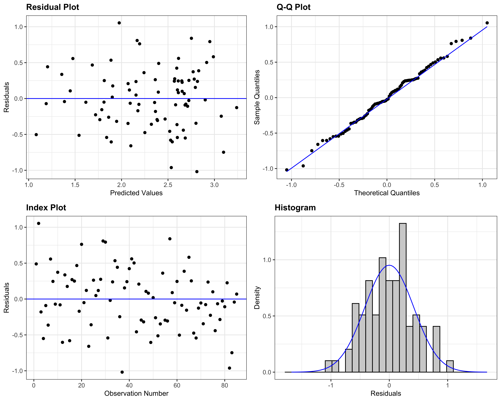
plot_summs(M0, M1, M2, M3, scale = T, inner_ci_level = 0.9, plot.distributions = F,
model.names = paste0("M", 0:3))4.2.5 M4: Previous significant variables + Age and Income
With the next model M4, we eliminated the non-significant variables from previous models and added age (as the elderly are the most affected by both the virus and the deterioration of regular medical care) and income (following the hypothesis that in poorer regions the population will ignore the restrictions more frequently as they must provide money for their families). It was found that on its own M4 has almost no significant coefficients, however, it provides information on the potential of individual variables.
Population density expressed as residential floor area per capita proved to be insignificant, as its coefficient in M4 falls almost to zero. The coefficients for the share of workers in manufacturing (C) and retail & services (G), the number of doctors per capita, and humidity in M4 and previous models vary slightly but mostly remain significant, suggesting that these two economic domains with intensive and close human interaction are important negative factors of the excess mortality.
M4 <- regions_sf_transformed %>%
lm(data = ., formula = Excess_mortality_apr_feb_per_capita ~
Floor_Area_per_capita + Workers_in_C_EconAct_Share +
Workers_in_G_EconAct_Share + Jul_Humid_Mean_10yr +
Doctors_per_capita_x1000 + Migr_Inflow_InterReg_3Y_mean_per_capita_x10000 +
Airport_Density_log + Post_Working_Age_Population_Share +
Income_per_capita + Population_Below_Living_Wage_Share)
resid_panel(M4)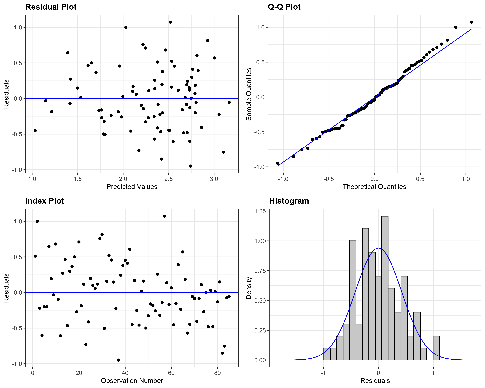
plot_summs(M0, M1, M2, M3, M4, scale = T, inner_ci_level = 0.9,
plot.distributions = F, model.names = paste0("M", 0:4))4.2.6 M5: Age + Income + Digital Skills and E-commerce
M5 builds on M4 by adding digital skills, the share of e-commerce users and the overall provision of retail businesses. In M5 we can see that income expressed as the share of the population with income below the living wage has a high negative impact on excess mortality. This is counterintuitive but may suggest that those households interacted less, as they had no money to spend.
The higher share of e-commerce users, as well as the higher number of retail locations per capita, also had a negative effect, as the reliance on face-to-face contact was lower in regions with high values for these variables. Interestingly, M5 also suggests that a higher share of the population using government services over the Internet somehow negatively affects mortality.
M5 <- regions_sf_transformed %>%
lm(data = ., formula = Excess_mortality_apr_feb_per_capita ~
Post_Working_Age_Population_Share + Income_per_capita +
Population_Below_Living_Wage_Share + Doctors_per_capita_x1000 +
Salary_Region_to_Country_Ratio + Ecommerce_Users_Share +
Retail_N_per_capita_x1000 + Digital_Gov_Serv_Users_Share)
resid_panel(M5)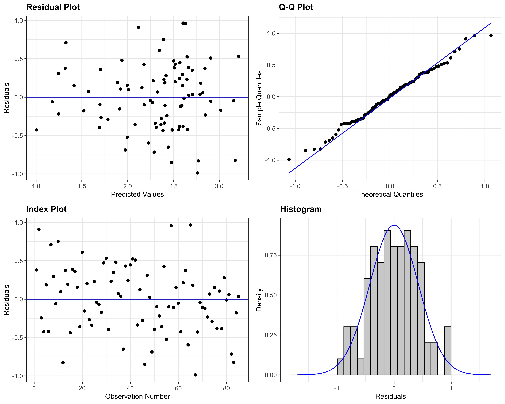
plot_summs(M0, M1, M2, M3, M4, M5, scale = T, inner_ci_level = 0.9,
plot.distributions = F, model.names = paste0("M", 0:5))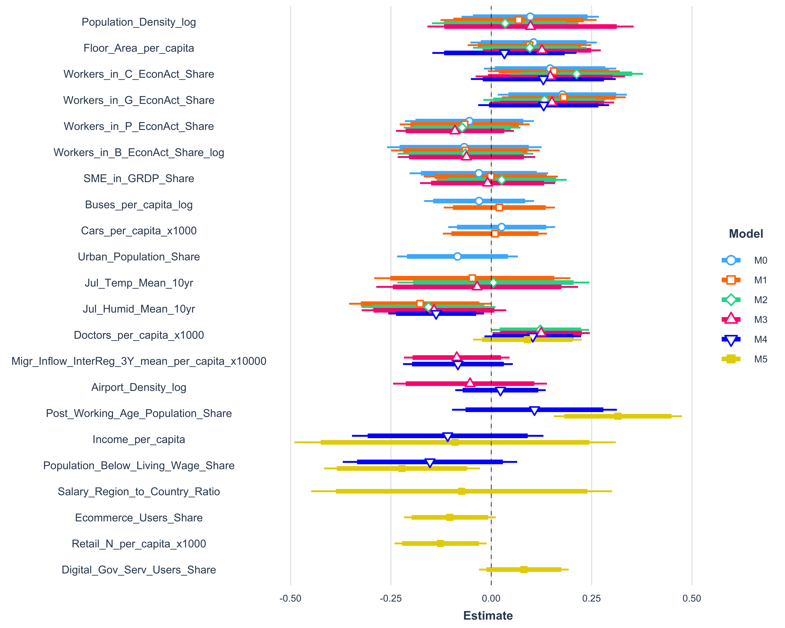
4.2.7 M6: Final OLS models
Finally, models M6_C, M6_G and M6_CG are the ultimate models with the most significant variables that demonstrate a noticeable and explainable effect. The difference is that M6_C uses the share of employees in manufacturing (C), while M6_G replaces it with the share in retail and services (G). M6_CG uses the shares in both C and G economic activities.
Clearly, the share of employees in C and G is almost equally important, both according to the models and the logic behind the variables, however with the M6_C model we are able to capture the effect of retail with the number of retail locations per capita and e-commerce. M6_G and M6_CG, despite their overall similarity to M6_C, do not reproduce the same effects reliably.
M6 models also suggest that the number of doctors is irrelevant, which makes sense compared to the previous models as this variable had a positive effect on excess mortality, which could only be explained by assuming that contacts through doctors were stimulating additional infections.
M6_C <- regions_sf_transformed %>%
lm(data = ., formula = Excess_mortality_apr_feb_per_capita ~
Migr_Inflow_InterReg_3Y_mean_per_capita_x10000 + Doctors_per_capita_x1000 +
Jul_Humid_Mean_10yr + Post_Working_Age_Population_Share +
Retail_N_per_capita_x1000 + Workers_in_C_EconAct_Share +
Ecommerce_Users_Share + Population_Below_Living_Wage_Share)
resid_panel(M6_C)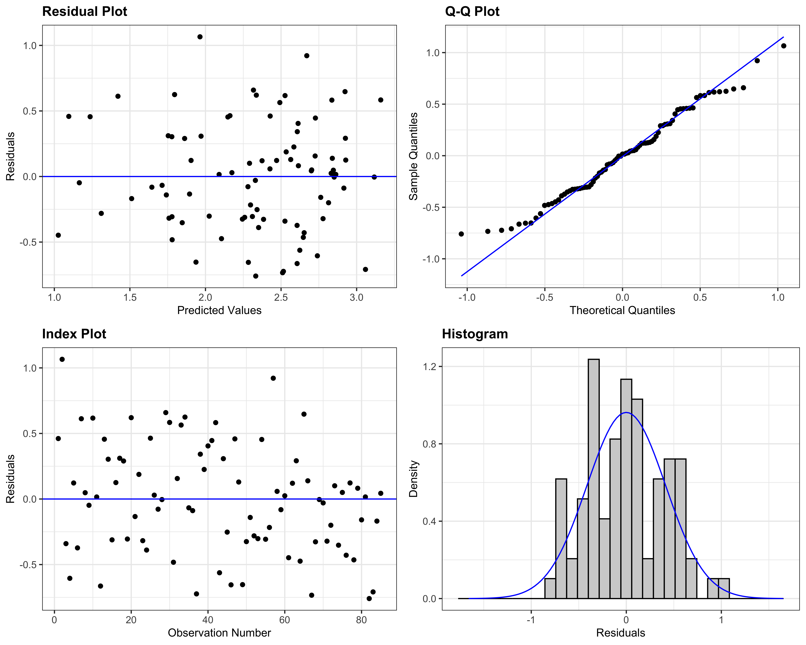
ols_coefs_up_to_m6c <- plot_summs(M0, M1, M2, M3, M4, M5, M6_C,
scale = T, robust = TRUE, inner_ci_level = 0.9, plot.distributions = F,
model.names = c(paste0("M", 0:5), "M6_C")) + labs(x = "Estimates (z-standardised, robust, CI 95%)")
ols_coefs_up_to_m6cM6_G <- regions_sf_transformed %>%
lm(data = ., formula = Excess_mortality_apr_feb_per_capita ~
Migr_Inflow_InterReg_3Y_mean_per_capita_x10000 + Doctors_per_capita_x1000 +
Jul_Humid_Mean_10yr + Post_Working_Age_Population_Share +
Retail_N_per_capita_x1000 + Workers_in_G_EconAct_Share +
Ecommerce_Users_Share + Population_Below_Living_Wage_Share)
resid_panel(M6_G)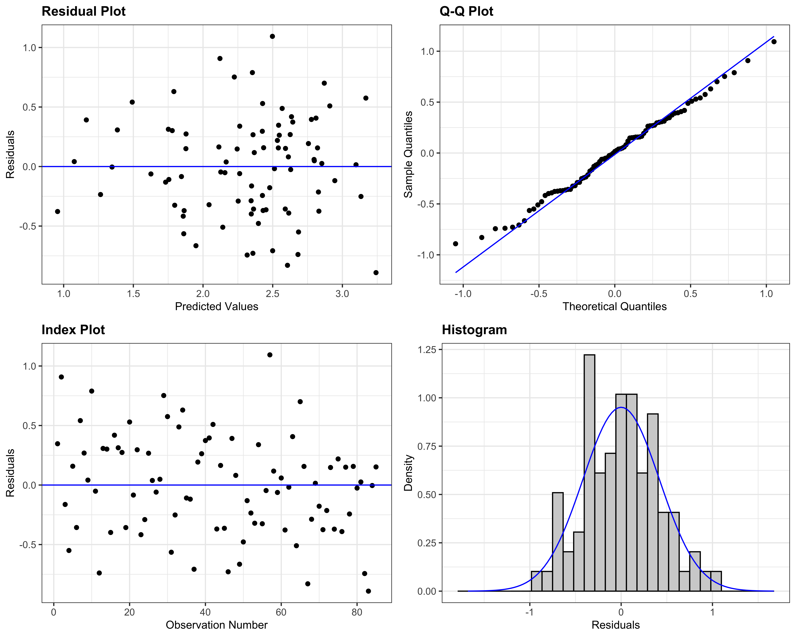
ols_coefs_m6c_vs_m6_g <- plot_summs(M6_C, M6_G, scale = T, robust = TRUE,
inner_ci_level = 0.9, plot.distributions = F, model.names = c("M6_C",
"M6_G")) + labs(x = "Estimates (z-standardised, robust, CI 95%)")
ols_coefs_m6c_vs_m6_g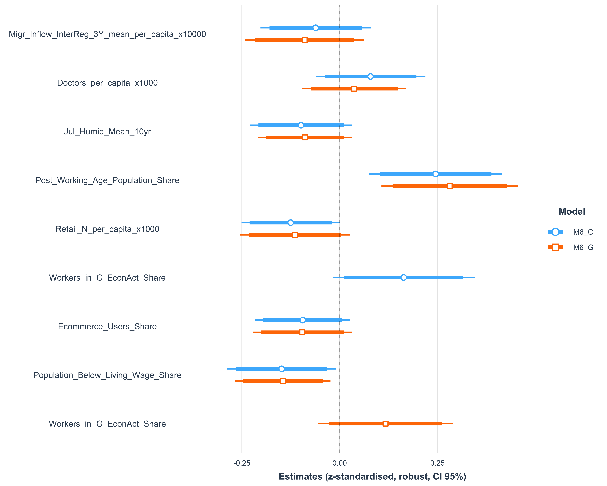
M6_CG <- regions_sf_transformed %>%
lm(data = ., formula = Excess_mortality_apr_feb_per_capita ~
Migr_Inflow_InterReg_3Y_mean_per_capita_x10000 + Doctors_per_capita_x1000 +
Jul_Humid_Mean_10yr + Post_Working_Age_Population_Share +
Retail_N_per_capita_x1000 + Workers_in_G_EconAct_Share +
Ecommerce_Users_Share + Workers_in_C_EconAct_Share +
Population_Below_Living_Wage_Share)
resid_panel(M6_CG)ols_coefs_m6cg <- plot_summs(M6_C, M6_G, M6_CG, scale = T, robust = TRUE,
inner_ci_level = 0.9, plot.distributions = F, model.names = c("M6_C",
"M6_G", "M6_CG")) + labs(x = "Estimates (z-standardised, robust, CI 95%)")
ols_coefs_m6cg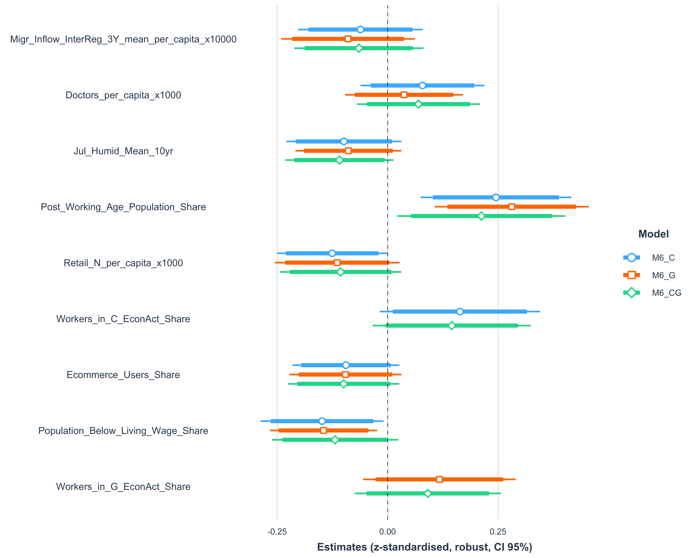
4.2.8 Compare all models
A statistical summary of all OLS models is provided below. It shows that models M6_CG and M6_C are the best according to most model quality metrics. They have the lowest AICc (corrected Akaike information criterion), highest R-squared and adjusted R-squared, and lowest RMSE (root-mean-square error). Therefore, we used these models and their variables as the best baseline for the spatial extension of the model.
MM <- list(M0, M1, M2, M3, M4, M5, M6_C, M6_G, M6_CG)
names(MM) <- c("M0", "M1", "M2", "M3", "M4", "M5", "M6_C", "M6_G",
"M6_CG")
ols_compare_dt <- build_OLS_summaries(model_set = MM, data_sf = regions_sf_transformed)
ols_compare_dt_t <- data.table(Indicator = names(ols_compare_dt)[2:length(ols_compare_dt)],
data.table::transpose(ols_compare_dt, make.names = T))
ols_summaries_plot <- plot_model_comparison(ols_compare_dt)
ols_summaries_plot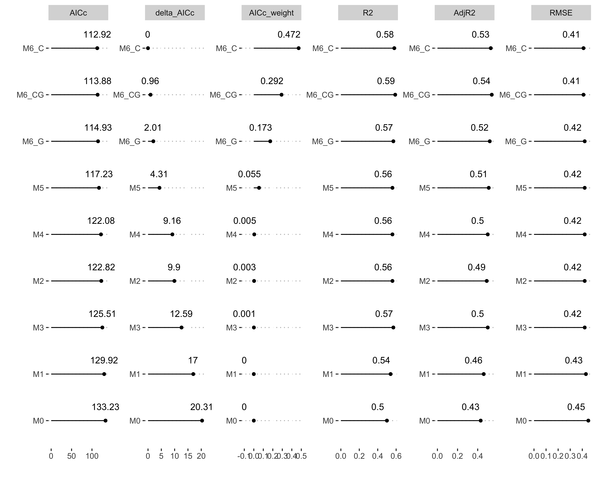
4.3 Spatial models
We used M6_CG as the baseline OLS model and extended it with spatial specifications. The best models are SEM (Spatial Error Model), LAG (Spatial Lag Model) and OLS. These models have the lowest corrected Akaike Information Criterion (AICc), but the values are very close and not significantly different.
However, SEM helps to compensate for the spatial autocorrelation of some unobserved and unaccounted spatially autocorrelated factors. The LAG model corrects for the spatial autocorrelation of the excess mortality and the fact that the spread of COVID-19 is indeed quite likely to occur between the neighbouring regions, which is also observed on the global scale. Other models (all models below OLS in the figure below) do produce lower model errors, however, they add very little in terms of interpretability of the results in general and the model coefficients.
model_formula_best <- "Excess_mortality_apr_feb_per_capita ~ Migr_IntraReg_3Y_mean_per_capita_x10000 + Doctors_per_capita_x1000 + Jul_Humid_Mean_10yr + Post_Working_Age_Population_Share + Retail_N_per_capita_x1000 + Workers_in_G_EconAct_Share + Workers_in_C_EconAct_Share + Ecommerce_Users_Share + Population_Below_Living_Wage_Share"regions_sf_transformed_standardised_xs <- standardise_sf(data_sf = regions_sf_transformed,
y_var = "Excess_mortality_apr_feb_per_capita")
model_set_best_spatial <- build_models(data_sf = regions_sf_transformed,
W = W, formula_string = model_formula_best, standardise = FALSE)
model_set_best_spatial_std <- build_models(data_sf = regions_sf_transformed_standardised_xs,
W = W, formula_string = model_formula_best, standardise = FALSE)4.4 Model performance comparison
model_summaries <- build_model_summaries(model_set_best_spatial,
data_sf = regions_sf_transformed)
model_summaries_std <- build_model_summaries(model_set_best_spatial,
data_sf = regions_sf_transformed_standardised_xs)
model_summaries_best_plot <- plot_model_comparison(model_summaries)
model_summaries_best_plot4.5 Comparison of spatial models’ coefficients
spat_coefs <- plot_summs(model_set_best_spatial_std$mod_lm, model_set_best_spatial_std$mod_sem,
model_set_best_spatial_std$mod_lag, model_set_best_spatial_std$mod_sdm,
model_set_best_spatial_std$mod_sdem, model_set_best_spatial_std$mod_slx,
model_set_best_spatial_std$mod_sarar, scale = TRUE, robust = TRUE,
inner_ci_level = 0.9, plot.distributions = F, model.names = c("OLS",
"SEM", "LAG", "SDM", "SDEM", "SLX", "SARAR")) + labs(x = "Estimates (z-standardised, robust, CI 95%, only direct impacts for spatial models)")
spat_coefs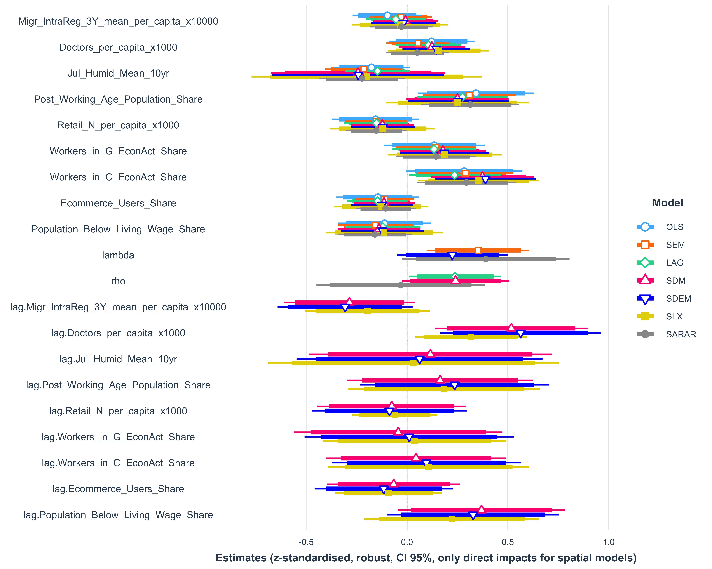
4.6 Employment correlation and regression
4.6.1 Employment correlation with excess mortality
top_workers_vars <- cor_table[order(-`LM R2`)] %>%
head(20) %>%
.[, `Variable Name`] %>%
.[grepl("Workers_in.*", .)]
correlation_pairs_top_x <- yx_vars_correlation_matrix(y_var = "Excess_mortality_apr_feb_per_capita",
x_vars = top_workers_vars, data_sf = regions_sf_transformed)
correlation_pairs_top_x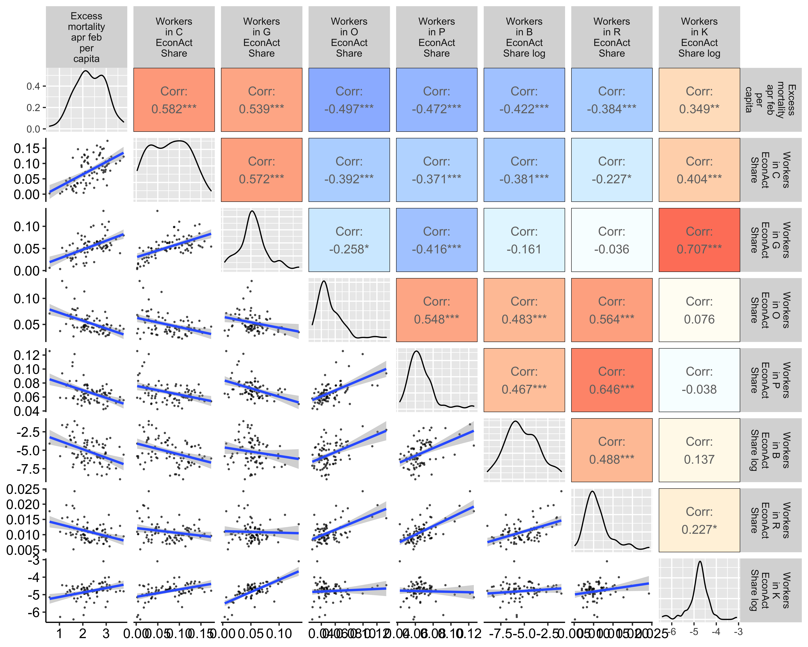
5 Correlation of the employment in economic activities
As we can see from the figure below, shares of employment in many economic activities are highly correlated with each other, as well as with the excess mortality. So hypothetically, a model for excess mortality could be composed completely based on the employment rates.
We have explored this option and can conclude that using just one of the economic activity type G (retail) is the best option. The employment in G does not necessarily capture the whole employment, and therefore interaction, structure, but it is just enough to explain the excess mortality without relying on other economic activities.
workers_correlations <- ggcorr(regions_sf_transformed %>%
st_drop_geometry() %>%
dplyr::select("Excess_mortality_apr_feb_per_capita", "Population_log", contains("Workers_in")) %>%
rename_all(.funs = ~ gsub("Workers_in_|_EconAct_Share|_log", "", .x)) %>%
rename_all(.funs = ~ gsub("Excess_mortality_apr_feb_per_capita", "Excess Mortality", .x)),
nbreaks = 7,
low = "steelblue", mid = "grey90", high = "darkred", hjust = 0.93, size = 6,
label = T, label_color = "grey80", label_size = 3,
# geom = "circle",
layout.exp = 10)
workers_correlationsLet us focus on fewer variables:
workers_correlations_subset <- ggcorr(regions_sf_transformed %>%
st_drop_geometry() %>%
# dplyr::select("Excess_mortality_apr_feb_per_capita", "Population_log",
dplyr::select("Excess_mortality_apr_feb_per_capita",
contains(paste0("Workers_in_", c("A_", "B_", "C_", "D_", "G_", "J_", "K_", "P_", "R_") ))) %>%
rename_all(.funs = ~ gsub("Workers_in_|_EconAct_Share|_log", "", .x)) %>%
rename_all(.funs = ~ gsub("Excess_mortality_apr_feb_per_capita", "Excess Mortality", .x)),
nbreaks = 7,
low = "steelblue", mid = "grey90", high = "darkred", hjust = 0.93, size = 6,
label = T, label_color = "grey80", label_size = 3,
# geom = "circle",
layout.exp = 10)
workers_correlations_subset6 Export article plots and data
6.1 Export model summaries
Saving the model plots for the paper draft.
ggsave(plot = three_maps, filename = here::here("plots", "fig_01_clusters.tiff"),
device = "tiff", units = "cm", width = 24, height = 20, dpi = 300,
compression = "lzw")
ggsave(plot = three_maps, filename = here::here("plots", "fig_01_clusters.png"),
device = "png", units = "cm", width = 24, height = 20, dpi = 200)ggsave(plot = ols_coefs_up_to_m6c, filename = here::here("plots",
"fig_02_coefs_ols_up_to_m6c.tiff"), device = "tiff", units = "cm",
width = 20, height = 22, dpi = 140, compression = "lzw")
ggsave(plot = ols_coefs_up_to_m6c, filename = here::here("plots",
"fig_02_coefs_ols_up_to_m6c.png"), device = "png", units = "cm",
width = 20, height = 22, dpi = 140)
ggsave(plot = ols_coefs_m6cg, filename = here::here("plots",
"fig_03_ols_coefs_m6c_vs_m6_g.tiff"), device = "tiff", units = "cm",
width = 20, height = 12, dpi = 140, compression = "lzw")
ggsave(plot = ols_coefs_m6cg, filename = here::here("plots",
"fig_03_ols_coefs_m6c_vs_m6_g.png"), device = "png", units = "cm",
width = 20, height = 12, dpi = 140)
ggsave(plot = spat_coefs, filename = here::here("plots", "fig_06_spat_coefs_compare.tiff"),
device = "tiff", units = "cm", width = 20, height = 22, dpi = 140,
compression = "lzw")
ggsave(plot = spat_coefs, filename = here::here("plots", "fig_06_spat_coefs_compare.png"),
device = "png", units = "cm", width = 20, height = 22, dpi = 140)ggsave(plot = ols_summaries_plot, filename = here::here("plots",
"fig_04_ols_summaries.tiff"), device = "tiff", units = "cm",
width = 30, height = 20, dpi = 140, compression = "lzw")
ggsave(plot = ols_summaries_plot, filename = here::here("plots",
"fig_04_ols_summaries.png"), device = "png", units = "cm",
width = 30, height = 20, dpi = 140)ggsave(plot = model_summaries_best_plot, filename = here::here("plots",
"fig_05_spatial_mod_summaries.tiff"), device = "tiff", units = "cm",
width = 30, height = 20, dpi = 140, compression = "lzw")
ggsave(plot = model_summaries_best_plot, filename = here::here("plots",
"fig_05_spatial_mod_summaries.png"), device = "png", units = "cm",
width = 30, height = 20, dpi = 140)ggsave(plot = workers_correlations, filename = here::here("plots",
"fig_07_empl_correlations.tiff"), device = "tiff", units = "cm",
width = 24, height = 20, dpi = 200, compression = "lzw")
ggsave(plot = workers_correlations, filename = here::here("plots",
"fig_07_empl_correlations.png"), device = "png", units = "cm",
width = 24, height = 20, dpi = 200)